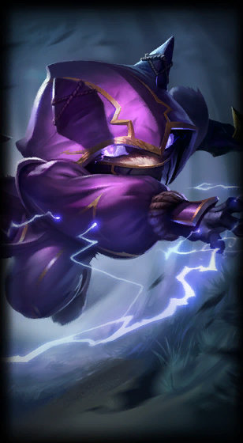

Kennen
the Heart of the Tempest
Class :
Mage, Marksman
Lore :
More than just the lightning-quick enforcer of Ionian balance, Kennen is the only yordle member of the Kinkou. Despite his small, furry stature, he is eager to take on any threat with a whirling storm of shuriken and boundless enthusiasm. Alongside his master Shen, Kennen patrols the spirit realm, employing devastating electrical energy to strike down his enemies.
Stats :
| Health | Health per level | Mana | Mana per level | Movement speed | Armor | Armor per level | MR | MR per level | Range | HP regen | HP regen per level | Mana regen | Mana regen per level | Crit | Crit per level | AD | AD per level | AS per level | AS |
|---|---|---|---|---|---|---|---|---|---|---|---|---|---|---|---|---|---|---|---|
| 541 | 84 | 200 | 0 | 335 | 29 | 3.75 | 30 | 0.5 | 550 | 5.5 | 0.65 | 50 | 0 | 0 | 0 | 48 | 3.75 | 3.4 | 0.625 |

Passive : Mark of the Storm
Kennen stuns enemies he hits 3 times with his abilities.